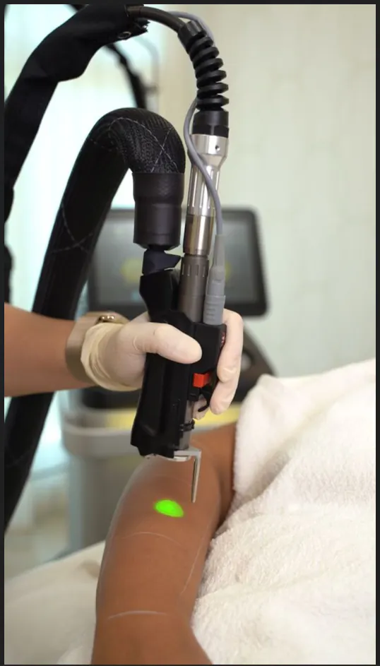
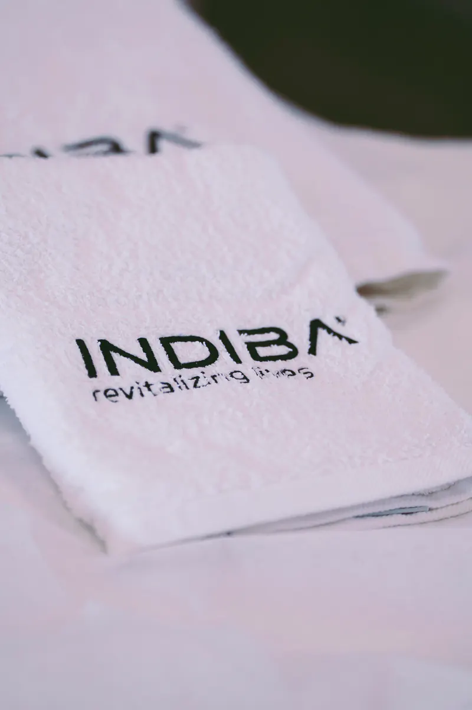
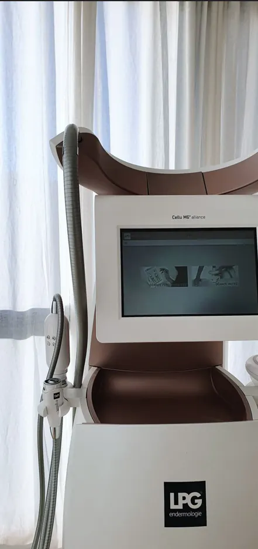

Láser Cynosure
Plataforma láser y de luz para depilación, manchas, lesiones vasculares y rejuvenecimiento.
- Alejandrita
- Nd:YAG
- Apogee Elite
- IPL
Los equipos con los que trabajamos en BELSA, explicados con claridad y enlazados a los tratamientos en los que los utilizamos.
Elegimos cada equipo por su respaldo y su indicación. La tecnología nunca sustituye a la valoración: la complementa.

Plataforma láser y de luz para depilación, manchas, lesiones vasculares y rejuvenecimiento.

Radiofrecuencia fraccionada con microagujas de presión para textura, poros, cicatrices y firmeza.
Centrífuga y kit de laboratorio para obtener plasma rico en plaquetas y exosomas autólogos. Terapias biológicas de medicina regenerativa.
Carbtek CO2 Infusion Advanced: infusión controlada de CO2 medicinal.
Sistema de microneedling de precisión del laboratorio Mediderma.

INDIBA (448 kHz) y Symed de Termosalud para protocolos faciales y corporales.

Endermologie: estimulación mecánica no invasiva de la piel y el tejido.
Hidrodermoabrasión Deep2 para limpieza profunda, exfoliación e hidratación.

FHOS, Mei Light Therapy de Naqua y Excellderm Pro de Asthem, como complemento de tratamientos faciales.
Presoterapia, casco, máscara y gafas de luz para tratamientos capilares y faciales, y manta y cinturón térmicos para planes corporales.
Láser Cynosure (Alejandrita, Nd:YAG, Apogee Elite e IPL), Reverso, centrífuga para PRP y exosomas, Carbtek, Nanopore, INDIBA, Symed, LPG Cellu M6, Deep2, tecnología lumínica y complementos como la presoterapia.
Se decide en la valoración, según tu objetivo y el estado de tu piel o de la zona a tratar.
No. La tecnología es una herramienta; la indicación la decide siempre un profesional.
¿Qué tecnología encaja contigo?